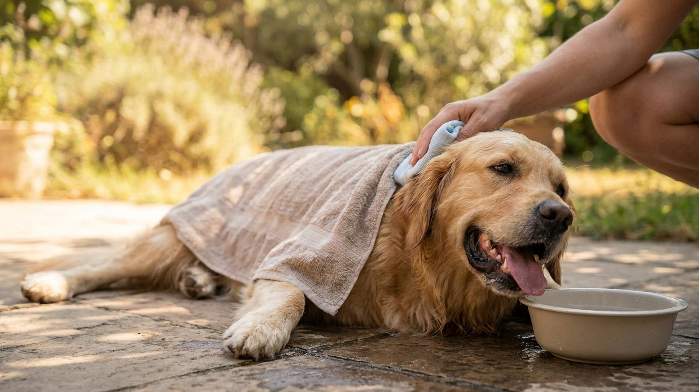

Тепловой удар у собаки летом: признаки, первая помощь, профилактика

26 мая 2026 · 9 минут чтения · Здоровье · Экстренная помощь
Тепловой удар — одна из главных причин гибели собак в летний сезон. Температура тела поднимается до 41-42 градусов за минуты, органы начинают отказывать. Смерть без помощи наступает в течение 20-30 минут. При этом большинство случаев — полностью предотвратимы. Разбираем, как распознать перегрев, что делать в первые минуты и как выстроить безопасный летний режим.
Почему собаки перегреваются быстрее людей
Собаки охлаждаются принципиально иначе, чем люди. У них нет полноценной системы потоотделения по всему телу — охлаждение происходит через учащённое дыхание (тепинг) и через подушечки лап. Этого катастрофически мало при высокой температуре и влажности воздуха.
Дополнительные факторы риска:
- Брахицефальные породы (мопсы, бульдоги, пекинесы, боксёры) — анатомически суженные дыхательные пути не дают эффективно тепиться. Риск в 3-5 раз выше среднего.
- Густая длинная шерсть (хаски, самоеды, маламуты, чау-чау) — естественная теплоизоляция работает в обе стороны.
- Пожилые собаки и щенки — терморегуляция хуже.
- Ожирение — жировой слой замедляет теплоотдачу.
- Хронические болезни сердца и дыхательных путей.
Температура асфальта в Москве в июле при +30 на воздухе — около +55-60. Подушечки лап горят, собака поднимает лапы, тепиться нормально не может. Это ловушка.
Признаки теплового удара: от ранних до критических
Ранние симптомы (ещё можно помочь дома):
- Учащённое, тяжёлое дыхание с широко открытой пастью.
- Обильное слюноотделение, язык ярко-красный или тёмно-розовый.
- Собака ищет тень, ложится на прохладные поверхности, отказывается идти.
- Пульс частый — норма для собак 60-140 ударов в минуту, при перегреве 160+.
- Слабость задних конечностей, неуверенная походка.
Критические симптомы (нужна клиника немедленно):
- Рвота и диарея, часто с кровью.
- Дёргание мышц, судороги.
- Потеря координации, собака падает.
- Потеря сознания или ступор — не реагирует на голос.
- Синюшный или белый цвет дёсен — признак нарушения кровообращения.
- Температура тела выше 41 градуса (норма собаки — 37,5-39).
Первая помощь: что делать в первые 10 минут
Действуйте немедленно — каждая минута имеет значение.
- Переместите собаку в тень или прохладное помещение — любое место без прямого солнца и с движением воздуха.
- Начните охлаждение прохладной (не ледяной!) водой — смочите шею, подмышки, паховую область, подушечки лап. Используйте влажные полотенца. Ледяная вода вызывает спазм поверхностных сосудов и замедляет теплоотдачу — это ошибка.
- Обдувайте собаку — вентилятор, работающий кондиционер, движущийся воздух в машине.
- Предложите воду — не заставляйте пить, не вливайте силой. Если хочет — пусть пьёт понемногу.
- Вызовите или поедьте в клинику — даже если собаке стало чуть лучше. Последствия теплового удара (почечная недостаточность, ДВС-синдром) развиваются через 12-24 часа.
- Измерьте температуру (ректально) — если термометр есть. Ниже 39,5 — охлаждение можно замедлить, но везти к врачу всё равно нужно.
Что нельзя делать: поливать ледяной водой, класть лёд прямо на тело, давать жаропонижающие препараты для людей (аспирин, парацетамол — токсичны для собак), укрывать мокрыми тёплыми полотенцами, тащить в горячую машину.
Что происходит в клинике
При тяжёлом тепловом ударе ветеринар назначит внутривенную инфузию — для восстановления объёма крови и охлаждения изнутри. Проверят коагулограмму (свёртываемость крови), биохимию почек и печени. Кислородная маска — при нарушении дыхания. Мониторинг ЭКГ — аритмии после перегрева часты. Госпитализация на 1-3 суток при тяжёлом случае.
По данным Veterinary Emergency and Critical Care Society, смертность при тяжёлом тепловом ударе у собак составляет 50-60%, если лечение начато позже 90 минут. При экстренной помощи в первые 30 минут — около 15-20%.
Как защитить собаку в жару: пошаговый летний чек-лист
Прогулки:
- Летом — только до 9 утра или после 20 вечера. Асфальт остывает медленно — проверяйте его тыльной стороной ладони: если держать 5 секунд больно, собаке тоже будет больно.
- Сократите интенсивность: не бег, не игры с мячом, только спокойная прогулка в тени.
- Возьмите воду с собой. Компактные поилки-непроливайки стоят 300-600 рублей.
Автомобиль:
- Никогда не оставляйте собаку в закрытой машине. За 10 минут при +25 за бортом температура внутри достигает +43. За 30 минут — +60. Стоянка в тени не спасает.
- Едете вместе — кондиционер обязателен.
Дача:
- Постоянный доступ к тени — навес, дерево, будка с вентиляцией (не металлическая на солнцепёке).
- Миска с водой в тени, менять каждые 2-3 часа, чтобы вода не нагревалась.
- Детский бассейн с 10-15 см воды — большинство собак с удовольствием стоят в нём.
- Охлаждающий коврик — гелевый или с охлаждающим наполнителем. Особенно актуален для брахицефалов.
Стрижка:
- Для длинношёрстных пород — стрижка за 2-3 недели до жары. Оставляйте не менее 3-4 см шерсти: она защищает кожу от солнечных ожогов.
- Короткошёрстные породы стричь не нужно.
- Брахицефалам особенно важна стрижка — лишняя шерсть при и без того затруднённом дыхании критична.
Особые группы риска на даче
Щенки до 6 месяцев — терморегуляция не сформирована. На даче держите в тени, не допускайте долгих активных игр в полдень.
Собаки старше 8 лет — хронические болезни сердца, почек, лишний вес. У возрастных собак тепловой удар развивается быстрее и последствия тяжелее. Прогулки только ранним утром.
Пары после обработки от паразитов — некоторые ошейники и капли создают дополнительную нагрузку на печень. Не гуляйте активно в первые 48 часов после обработки в жару.
Когда звонить в клинику немедленно
Без раздумий везите в клинику, если:
- Собака потеряла сознание или не реагирует на имя.
- Появились судороги.
- Рвота или диарея с кровью.
- Дёсны синюшные, белые или серые.
- Температура тела выше 41 градуса.
- После охлаждения стало лучше, но через 1-2 часа снова стало хуже.
Скорая помощь для животных работает круглосуточно в большинстве крупных городов. Телефон ближайшей неотложки стоит сохранить в телефоне заранее — до того, как понадобится.
Опишите симптомы собаки в AnimaLife — vet-AI даст первичную оценку срочности и подскажет, что делать прямо сейчас.
Спросить vet-AI в Telegram → · Спросить в MAX →
FAQ
Можно ли остричь хаски или маламута наголо летом?
Нет. Двойная шерсть этих пород создана природой для терморегуляции в обе стороны. Без шерсти собака перегреется быстрее и получит солнечный ожог кожи. Подшёрсток вычёсывается, верхний слой оставляется.
Сколько воды должна пить собака в жару?
Норма — 50-70 мл на кг веса в сутки в нормальных условиях. В жару — в 1,5-2 раза больше. Собака 20 кг должна выпивать до 2-2,5 литров в день. Отслеживайте потребление.
Помогает ли мокрое полотенце на спине?
Да, но кладите его под живот, между лап и на шею — там крупные сосуды. Полотенце на спине работает хуже, к тому же быстро нагревается.
После теплового удара собака восстановится полностью?
При лёгком случае — да. При тяжёлом возможны остаточные нарушения функции почек и неврологические симптомы. Поэтому профилактика важнее любого лечения.
Могут ли коротко остриженные собаки всё равно перегреться?
Да. Стрижка снижает риск, но не устраняет его. Порода, возраст, здоровье и условия среды важнее длины шерсти.
← Все статьи · Открыть AnimaLife в Telegram · RSS